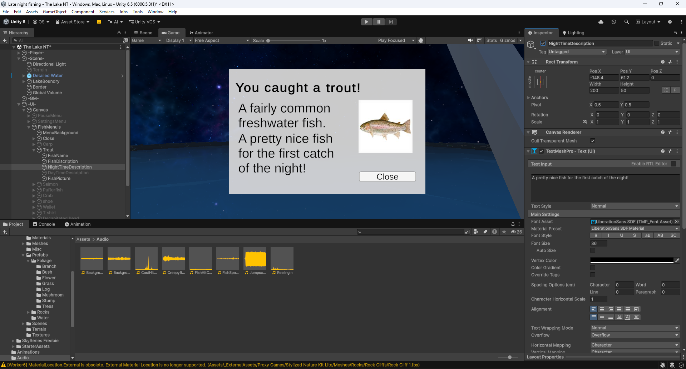
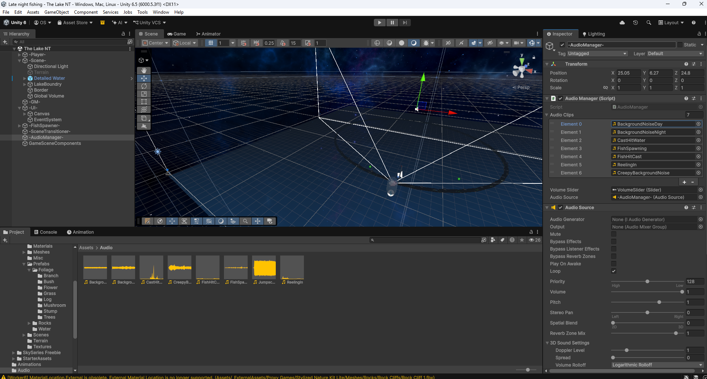
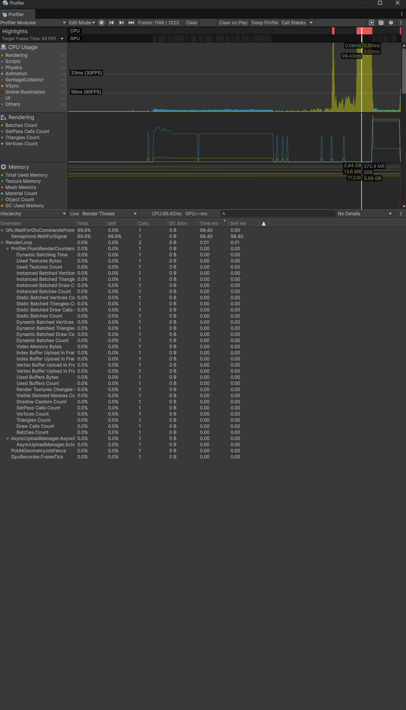
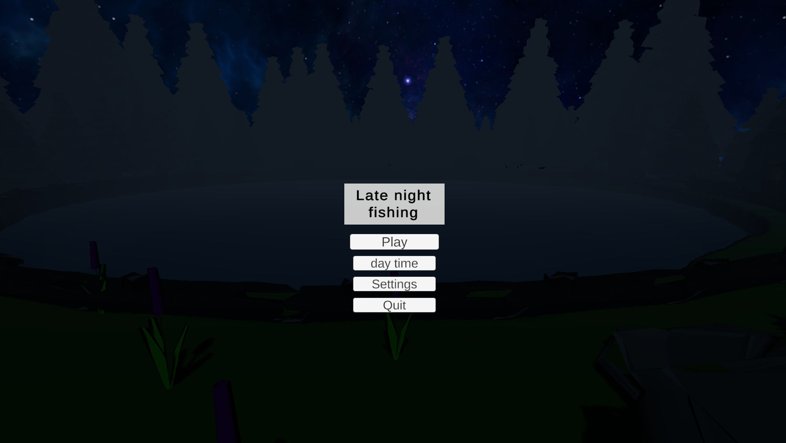
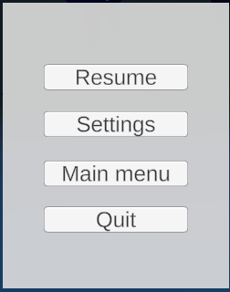

Video Game
Late night fishing
A game I made all by myself as a little side project: a horror fishing simulator with a fun daytime game mode, where even people who dislike horror can enjoy the experience of fishing.

About the Project
Late Night Fishing was a project I made to test and work on player immersion. I decided to make it a horror game because, with these types of games, it is easy to tell when someone is immersed. You can see this through their reactions to the jumpscares and atmosphere.
My Contribution
- Sound editing (the actual sounds were external assets)
- Level design (the actual assets were sourced from the Unity Asset Store)
- Post-processing
- Coding
- Gameplay design
- Narrative design
Project Details
Role
Game Designer, Engineer, Sound Designer
Engine
Unity
Team Size
1 person (myself)
Duration
2-3 weeks
Development Process
Below, you can find some screenshots and explanations of the design process and the choices I made.
I wanted to convey a sense of story and immersion to the player through the fish pop-ups. By having the text written in the first person, I wanted to give the impression that the player was commenting on their catch, thereby immersing them further in the experience. I started the game off slowly and peacefully before gradually ramping up the horror aspect. This created a nice flow to the story, so players wouldn't experience whiplash from sudden story beats.

As my goal was immersion, I quickly realised how important audio was. Therefore, I focused quite a bit on the sound design of this project. I made sure to add all the sounds I could think of that someone might hear while fishing, such as a bobber hitting the water, waves and crickets at night. I also added some sounds that were necessary for the gameplay to run smoothly, such as a sound playing when a fish spawned.
However, simply having audio doesn't guarantee immersion or horror. Therefore, playing with the audio when the horror started was also important. One example was how I cut the background noise when the player entered the scary part of the game. This took away their sense of peace and calm, leaving them sitting in silence for a moment. After that, I replaced the background sound with a low bass sound that continued playing to increase tension just before the jumpscare.

As I ran into some performance issues when running the game on my laptop, I had to make some simple changes to the game. Rendering the level put a lot of strain on my laptop, which meant that its fans would sound like they were about to take off every time I tried to start the game. To fix this issue, I implemented a loading screen that would load the scene in the background at a pace my laptop could comfortably handle. By having a loading screen, I could improve performance without having to show the player how the level was being rendered in real time.

While there aren't many settings, this was my first time working on an actual settings menu. The audio in this game played such a significant role that I didn't want to leave it up to chance whether the player found it too loud or too quiet. Therefore, I decided to add an audio slider to the settings menu, allowing players to adjust their audio levels so that everyone could enjoy the game according to their own preferences. Although I didn't implement them in this game, I also researched other settings, such as changing key bindings and similar features, to make my future games more accessible.


Final Result
In the end, this project was a great success in terms of my immersion tests!
I playtested my game multiple times with my peers. The first player who tested it got so scared by the jumpscare that they yelled in class.
Unfortunately, the immersion was a little lower for the other players afterwards, as they were either too scared to sit directly in front of the screen or too scared to fully immerse themselves in the experience. Some even refused to let themselves get immersed by constantly trying to talk to me or simply refusing to wear the headphones.
In the end, however, I think this means the game was a great success, as I was even able to terrify players who hadn't played the game yet.